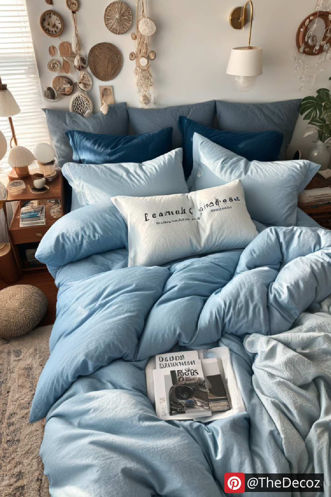
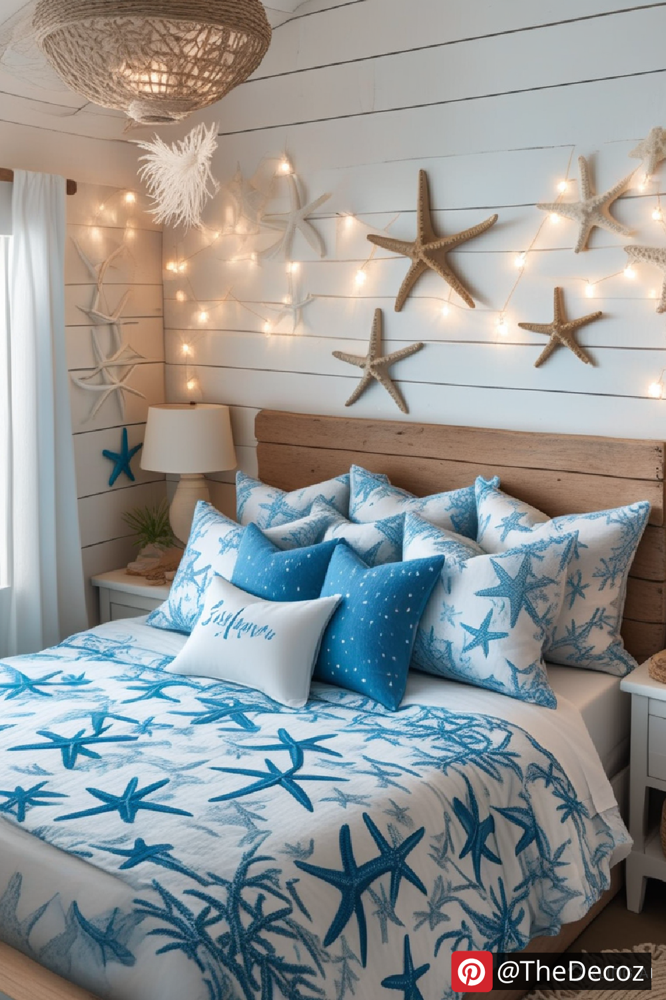
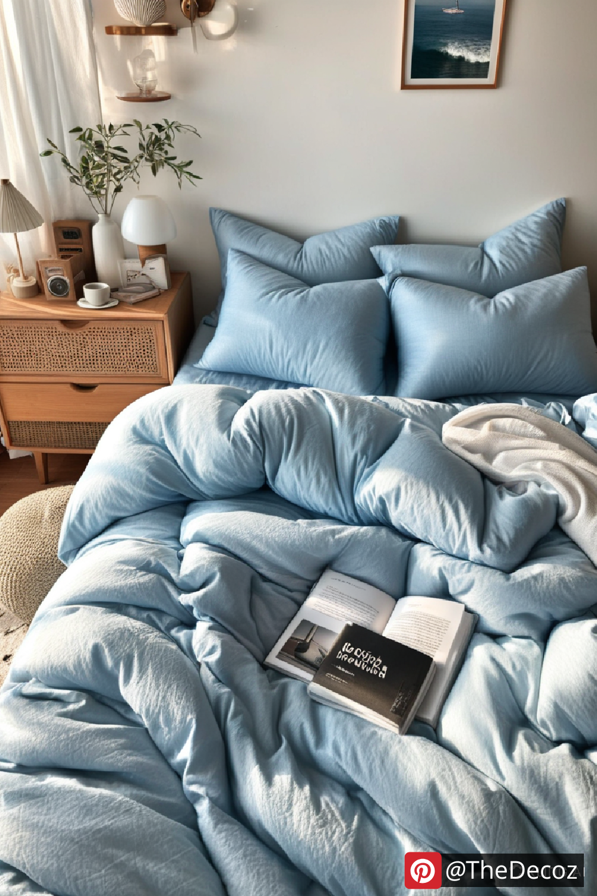
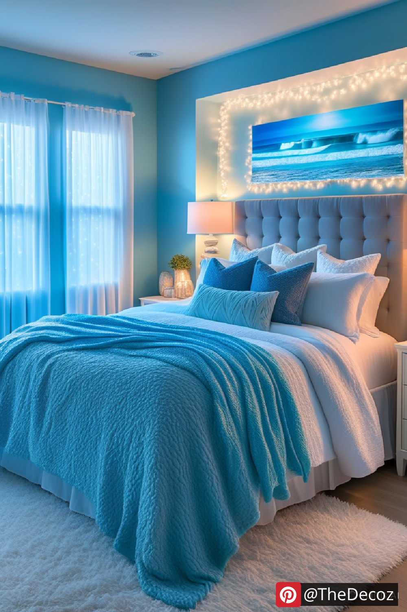
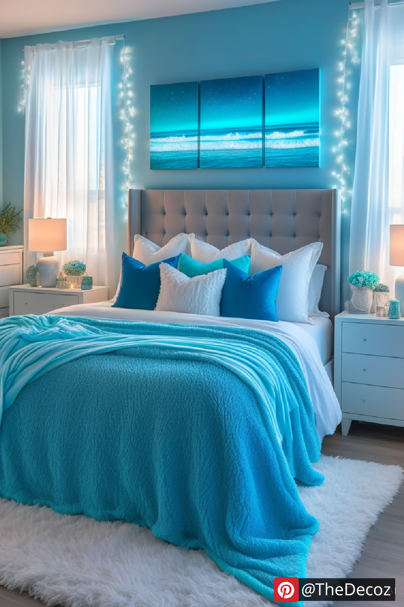

Creating a serene and refreshing environment in your home is easier than ever with ocean room decor. Whether you want to bring a coastal vibe into your bedroom, living room, or even a bathroom, the right decor elements can transport you straight to the seaside. From nautical accents to ocean-inspired colors, here’s how you can achieve a perfect oceanic atmosphere in your space.
The foundation of ocean room decor starts with the perfect color scheme. Soft blues, turquoise, seafoam green, and sandy beige tones mimic the hues of the ocean and beach. Incorporate these colors through wall paint, furniture, and accessories to create a calming coastal ambiance.
Decorating with nautical and marine-themed elements is essential to achieving an oceanic look. Consider these ideas:
Seashell and Coral Accents: Use real or artificial seashells and corals as table centerpieces or decorative wall art.
Driftwood and Wicker Furniture: Natural materials like driftwood and wicker bring an organic coastal feel to your space.
Ocean-Themed Artwork: Hang paintings or framed prints of ocean waves, marine life, and tropical beaches to capture the essence of the sea.
Rope and Anchor Details: Incorporate rope decorations, anchor motifs, and fishing nets to enhance the nautical aesthetic.
Adding the right textiles can complete your ocean-themed decor. Opt for:
Breezy, Light Curtains: Sheer or linen curtains in white or pastel shades create an airy, beach-like atmosphere.
Coastal-Inspired Bedding: Choose bedding with seashell, wave, or coral reef patterns in soothing ocean hues.
Plush Rugs and Throw Pillows: Layering soft rugs with wave-like textures and adding throw pillows in coastal patterns can enhance the cozy yet refreshing feel.
Lighting plays a crucial role in ocean room decor. Use:
Soft, Warm Lighting: Opt for warm-toned LED lights to mimic natural sunlight.
Lanterns and Candles: Nautical-style lanterns and scented candles with ocean fragrances help set the mood.
Glass and Shell Chandeliers: Decorative light fixtures made of seashells or glass beads create a beautiful marine-inspired focal point.
Bringing a bit of nature indoors can elevate your ocean decor. Consider:
Tropical Plants: Palm trees, ferns, and succulents bring a fresh and vibrant coastal vibe.
Sand and Water Features: Small indoor fountains or decorative sand jars can mimic the soothing effect of the seaside.
Ocean-Scented Diffusers: Fragrances like sea breeze, coconut, and fresh linen can enhance the ambiance.
Beach-Themed Wall Murals: A mural of the ocean, palm trees, or a pier view can make you feel like you’re right by the beach.
DIY Beach-Inspired Crafts: Personalize your space with handmade driftwood signs, seashell garlands, or nautical shadow boxes.
Transforming your space with ocean room decor is all about capturing the tranquility and beauty of the sea. By selecting the right colors, materials, and accessories, you can create a coastal haven that brings relaxation and serenity into your home. Whether you prefer a full beach house transformation or subtle nautical accents, ocean-themed decor is a timeless and refreshing choice for any space.
    